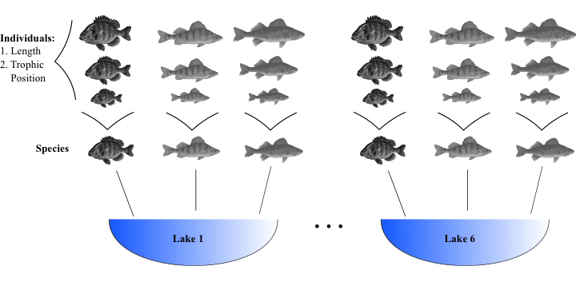
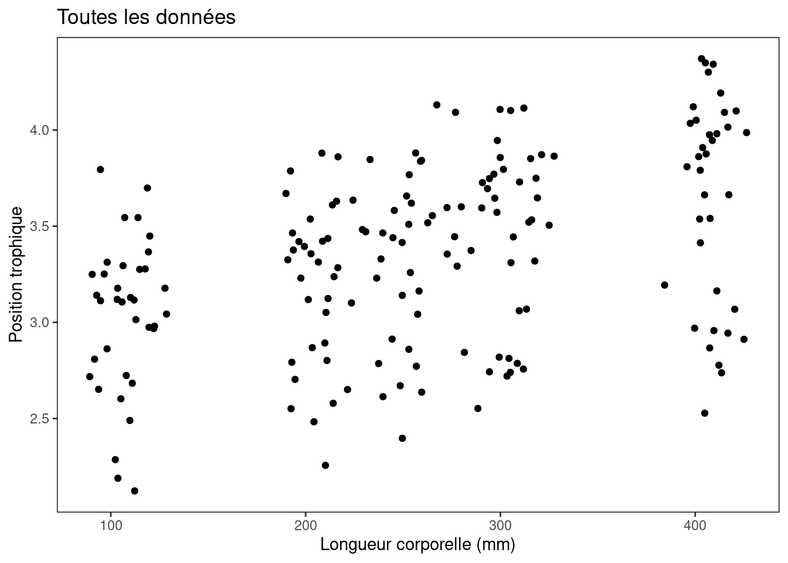
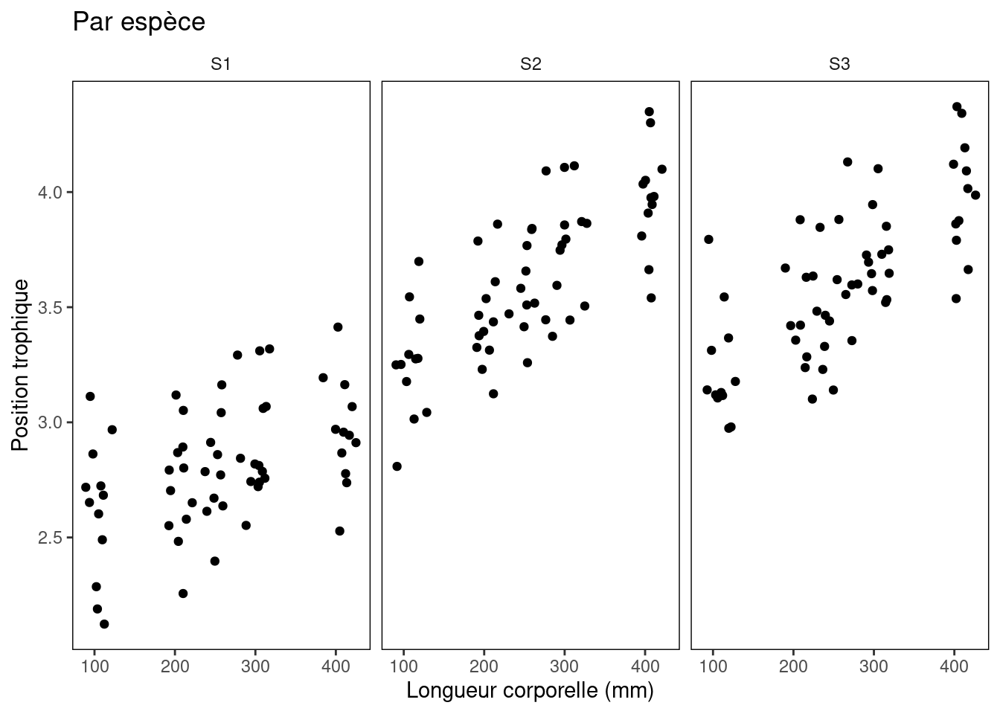
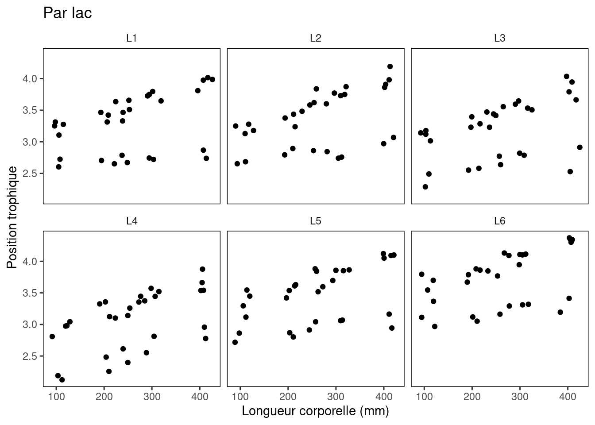

Chapitre 4 Commencer par une question
Avant de nous plonger dans le vif du sujet, commençons par se familiariser avec le jeu de données que nous utiliserons à titre d’exemple pour proposer une question de recherche.
Le jeu de données que nous utiliserons porte sur les positions trophiques des poissons. Dans ce jeu de données, des données ont été collectées pour 3 espèces de poissons différentes (S1-3) avec 10 individus échantillonnés par espèce dans 6 lacs différents (L1-6). Les individus de chaque espèce ont été mesurés et présentent des variations dans leur longueur corporelle et leur position trophique.
Voici une représentation visuelle pour vous aider à comprendre tout cela!
Note: Seulement trois individus sont montrés par espèce, mais en réalité il y a 10 individus par espèce.

Une question toute simple à laquelle vous pourriez répondre avec ce jeu de données est: est-ce que la position trophique des poissons augmente avec leur taille? Au cours de l’atelier, on tentera de répondre à cette question.
4.1 Défi 1
Pour notre premier défi, nous allons commencer à examiner notre jeu de données plus en profondeur. Reproduisez les graphiques 1-3 en utilisant le script ci-dessous et le jeu de données de poissons.
Observez les graphiques, puis évaluez ce que vous observez. Quelques questions clés sont:
1. S’attend-on à ce que, pour toutes les espèces, la position trophique augmente avec la longueur corporelle? Exactement de la même façon?
2. S’attend-on à ce que la relation entre la position trophique et la longueur corporelle soit pareille entre les lacs?
Comment ces relations pourraient-elles différer?
library(ggplot2)
# Chargez le jeu de données
fish.data <- read.csv('data/qcbs_w7_data.csv', stringsAsFactors = TRUE)
# Cette ligne variera en fonction de l'endroit où vos données sont enregistrées.
# Vérifiez votre répertoire de travail avec getwd(), et changez-le avec setwd() au besoin.
# Format 'custom' pour simplifier toutes les figures ggplot produites par la suite
fig <- theme_bw() +
theme(panel.grid.minor=element_blank(),
panel.grid.major=element_blank(),
panel.background=element_blank(),
strip.background=element_blank(),
strip.text.y = element_text(),
legend.background=element_blank(),
legend.key=element_blank(),
panel.border = element_rect(colour="black", fill = NA))
# Explorez les données graphiquement!
# Structure ggplot de base pour la relation qui nous intéresse
plot <- ggplot(aes(x = Fish_Length, y = Trophic_Pos), data = fish.data)
# Graphique 1 - Toutes les données
plot + geom_point() +
labs(x = "Longueur corporelle (mm)", y = "Position trophique",
title = "Toutes les données") +
fig # notre joli format ggplot!
# Graphique 2 - Par espèce
plot + geom_point() +
facet_wrap(~ Fish_Species) + # séparer la visualisation par espèce
labs(x = "Longueur corporelle (mm)", y = "Position trophique",
title = "Par espèce") +
fig
# Graphique 3 – Par lac
plot + geom_point() +
facet_wrap(~ Lake) + # séparer la visualisation par lac
labs(x = "Longueur corporelle (mm)", y = "Position trophique",
title = "Par lac") +
fig
Défi 1 Solution:
À partir de ces graphiques, nous pouvons tirer deux premières observations:
1. Toutes les espèces semblent augmenter leur position trophique avec la longueur, mais la pente peut être différente selon les espèces.
2. Certains paramètres spécifiques à chacun des lacs (e.g. la productivité primaire du système) peuvent changer la relation observée.